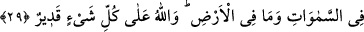

Hem benim düşmanımı seviyorsun, hem de bana
Dost olduğunu söylüyorsun, hamâkat senden uzak değildir.
Dost demek, seni seven; düşmanını sevmeyen kimse demektir. Düşmanlar üç türlüdür:
Düşmanın, dostunun düşmanı, düşmanının dostu.
Ey akıllı kişi, şu kimsenin dostluğundan uzak dur,
Senin düşmanlarınla dostluk eder, onlarla oturup kalkar.
“Ancak gelebilecek bir tehlikeden dolayı onlardan sakınmış olursanız müstesna.”
Bu âyet genel anlamda kâfirlerin dost edinilmeyeceğini; ancak bazı durumların istisnâ
edildiğini gösterir: Sanki şöyle denilmiştir: Açık ve gizli olarak hiçbir şekilde kâfirleri
dost edinmeyiniz. Ancak onlardan gelebilecek bir tehlikeden korunma hâliniz müstesna.
Bu da; kâfirlerin galip durumda bulunmaları, yahud mü’minin onlar arasında olması ve
bir tehlikenin bulunması hâlinde söz konusudur. Mü’minin nefsinde kâfire düşmanlık ve
buğz, tam olarak bulunduktan sonra sûretâ dostluk gösterilmesi ve engellerin ortadan
kaldırılmasının beklenmesi câiz olabilir. Nitekim Îsâ (a.s.) şöyle demiştir: “Ortada ol,
fakat kenardan yürü.” Yani görünüşte onlar içinde olabilirsin, fakat sîretinle onlardan
uzak ol. “Onlara kendi dostları gibi karışma. Tuttukları yola, yani sîretlerine kendini
kaptırma.” Bu bir ruhsattır. Sabredip de neticede öldürülen bir mü’minin ecri büyük
olur.
“Allah sizi kendisine karşı gelmekten sakındırmaktadır.” Mukaddes zâtından sizi
korkutmaktadır. “Benden korkun, benden ürperin!” meâlindeki âyet-i celîlelerde olduğu
gibi, “benim gazabımdan, benim sizi cezâlandırmamdan sakının” demektedir. Bu
sebeple Allah’ın düşmanlarını dost edinmek sûretiyle gazabına çarpılmaktan sakının.
Bu, şiddetli bir azap haberidir.
“Nihâyet son dönüş ancak Allah’adır.” Herkesin amelinin karşılığını Allah
verecektir. Bu sebeple herkesin son dönüşü Allah’adır.
29. De ki: İçinizdekileri gizleseniz de açığa vursanız da Allah onu bilir. Göklerde
ve yerde olanları da bilir. Allah her şeye kadirdir.
“De ki: Eğer siz göğüslerinizdeki şeyleri;” yani bu cümleden olarak kâfirlere
beslediğiniz dostluğu “gizleseniz de”, yahud kendi aranızda “açıklasanız da” Allah
bunu bilir” ve kendisine döndüğünüz zaman bunun hesabını sorar.
“Göklerde ve yerde ne varsa O bilir.” Hiçbir şey ona gizli kalamaz, O’ndan